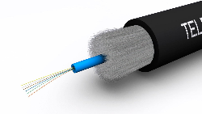

Fibra Optica
Es un medio de transmisión de datos que utiliza pulsos de luz para enviar información a través de cables de fibra fina y flexible. Esta compuesta por un núcleo central de vidrio por el que viaja la luz, y un revestimiento que la refleja de vuelta al núcleo. Este diseño permite que la luz viaje a largas distancias con una mínima pérdida de señal.
